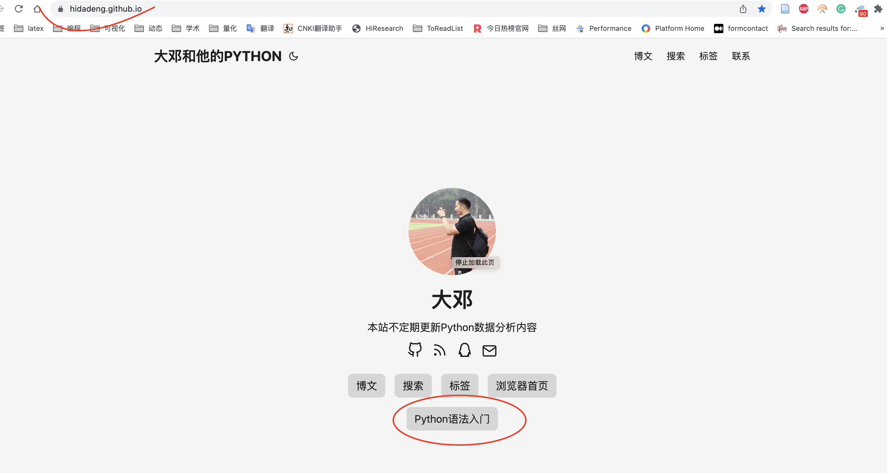
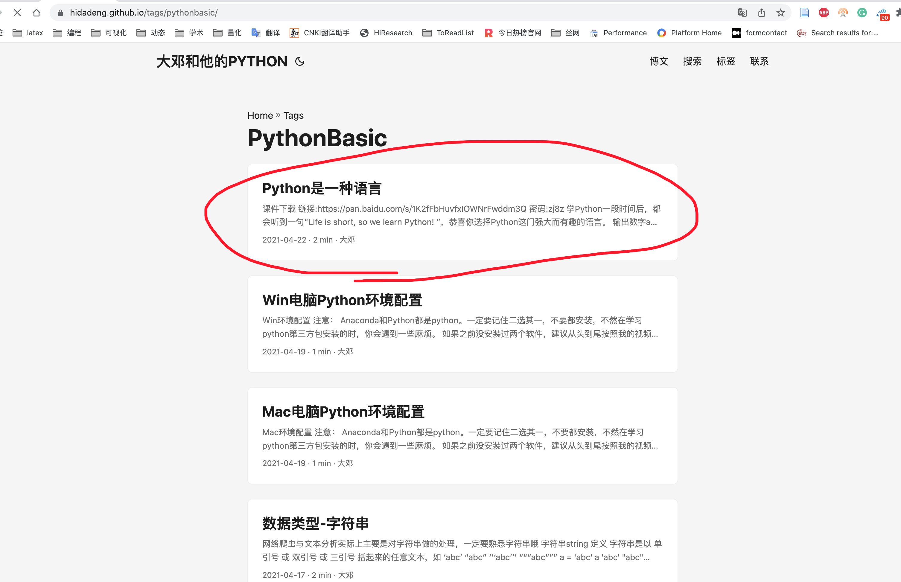
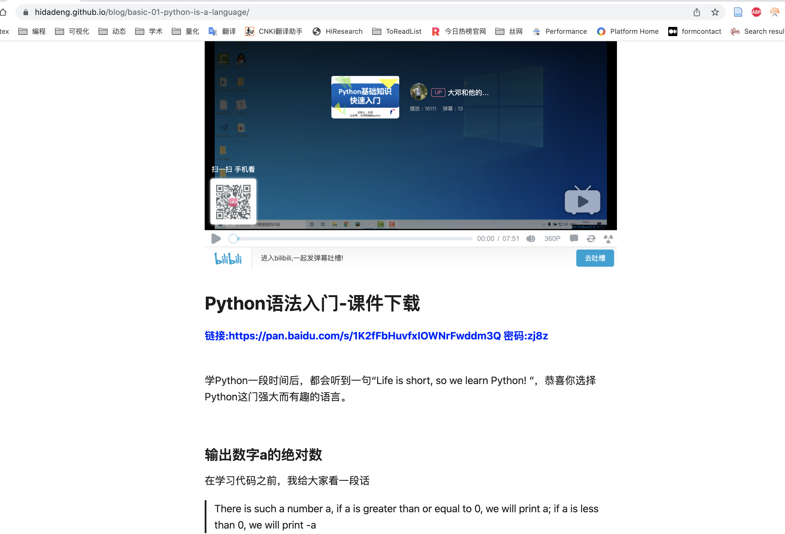
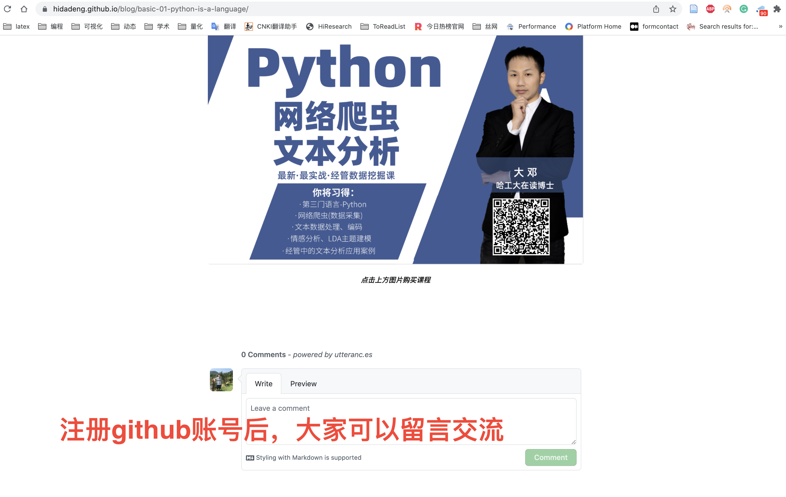

在科学研究中，数据的获取及分析是最重要的也是最棘手的三个环节！
在前大数据时代，一般使用实验法、调查问卷、访谈或者二手数据等方式，将数据整理为结构化的表格数据，之后再使用各种计量分析方法，对这些表格数据进行分析。但大数据时代，网络数据成为各方学者亟待挖掘的潜在宝藏，大量商业信息、社会信息以文本等非结构化、异构型数据格式存储于海量的网页中。那么对于经管为代表的人文社科类专业科研工作者而言，通过Python可以帮助学者解决使用Web数据进行科研面临的三个问题：
- Python语法 解决 如何通过电脑自动化帮我们做事情？
- 网络爬虫技术 解决 如何从网络世界中高效地 采集数据？
- 文本分析技术 解决 如何从杂乱的文本数据中抽取文本信息(变量)？
使用说明
目前Python语法入门部分已免费开放，最近将相关教程代码视频整合到大邓的博客中，
博客地址 https://hidadeng.github.io/

点击Python语法入门进入语法学习界面，一共有15篇基础知识。大家按照顺序，从上往下学习即可。

例如，点击Python是一种语言, 可以看到页面中
- 有B站视频
- 有课件下载地址
- 还有文档教程

此外，为了方便大家学习交流，博客开通了留言评论功能(有github账号的童靴才可以留言。)。建议大家注册个github账号(https://github.com/)，不止为了留言，更主要的是可以在github中找到自己需要的代码。

教程纲要
- 课程目标： 掌握Python语法
- 核心知识点： 数据类型、逻辑语句、常用内置函数、常用内置库
- 环境配置: 安装anaconda，注意安装过程中勾选Add Anaconda to the system Path environment variable、Register Anaconda as the system python 3.x
- 课件资料： 本课程全部使用jupyter notebook文件作为课程课件，已全部上传至github中。
Python语法入门目录
- Python跟英语一样是一门语言
- 环境配置
- 数据类型-字符串
- 数据类型-列表元组集合
- 数据类型-字典
- 数据类型-布尔值、None
- 逻辑语句(if&for&tryexcept)
- 高级语法-列表推导式
- 高级语法-理解函数
- 常用内置函数
- pathlib路径库
- 内置库csv文件库
- 正则表达式re库
- 常见错误汇总